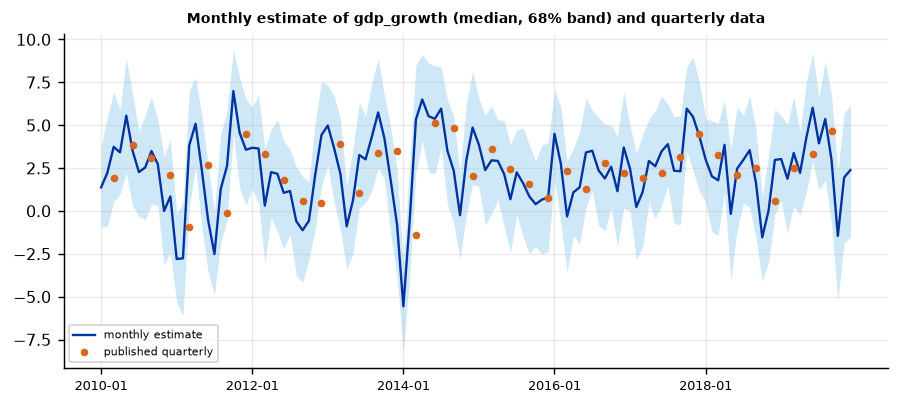
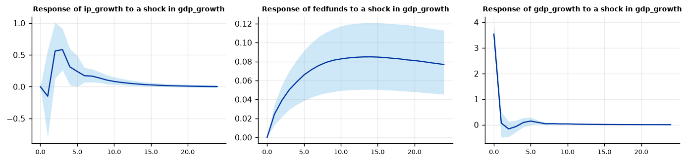

Run this model on your own data in Open Econometric Systems →
Step 1The question and the model
What is GDP growth this quarter, before the statistical office has published it? Industrial production and interest rates are published monthly, within weeks, but GDP only quarterly, after a month or more. A mixed-frequency VAR estimates the monthly dynamics of all variables jointly, including a latent monthly GDP growth series \(y^*_t\), and links it to the published quarterly figure \(y^Q\):
in the last month \(t\) of each quarter, and unobserved in the other months. The triangle weights \((1,2,3,2,1)/9\) of Mariano and Murasawa (2003) express the fact that quarterly growth is a weighted average of monthly growth rates; for variables in levels, the alternative is a three-month average. The VAR has a Normal-Wishart prior with Minnesota-type moments, and the posterior is simulated by a Gibbs sampler that alternates between the VAR parameters and the latent monthly path, which is drawn with the Carter-Kohn simulation smoother (Schorfheide and Song 2015).
What you get
Three outputs: (1) a monthly estimate of GDP growth with credible bands, which the data never contain; (2) a nowcast of the current quarter, updated each month as new monthly data arrive (the "Nowcasts" table gives the implied quarterly value after each month of the quarter); (3) VAR coefficients and impulse responses at the monthly frequency.
The latent monthly series is poorly identified from quarterly data alone: the bands are wide (Step 4). The model does not create information; it uses the monthly indicators to fill in the months between quarterly releases.
How to write it: the model
We estimate a mixed-frequency Bayesian VAR (Schorfheide and Song 2015) with industrial production growth, the federal funds rate and quarterly GDP growth, with five monthly lags. GDP growth is modelled as an unobserved monthly series whose triangle-weighted sum over five months (Mariano and Murasawa 2003) equals the published quarterly growth rate in the last month of each quarter. The VAR has a Normal-Wishart prior with Minnesota moments (overall tightness 0.2, prior mean of the first lags zero). The posterior is simulated with a Gibbs sampler, drawing the latent months with the Carter-Kohn algorithm; we use 3,000 draws after 2,000 burn-in.
Step 2Prepare the data
The file has one row per month. Put each quarterly value in the row of the quarter's last month and leave the other months of the quarter blank.
import numpy as np
import pandas as pd
import oes_engine as oes # pip install -e open-econometric-systems/oes-engine
data = open("mixed_frequency.csv").read()
df = pd.read_csv("mixed_frequency.csv")
print(df.iloc[:7].to_string(index=False))
print(df.notna().sum().rename("non-missing values").to_frame().T.to_string(index=False))
print(df.describe().round(2).loc[["mean", "std", "min", "max"]])
spec = dict(monthly=["ip_growth", "fedfunds"], quarterly=["gdp_growth"], time="date", lags=5, draws=3000, burn=2000)
r = oes.run("mfbvar", data, spec) # about two minutes on a laptop
oes.show(r, "Unit-root") date ip_growth fedfunds gdp_growth
1985-02 3.516 8.50 NaN
1985-03 1.752 8.58 3.8572
1985-04 -2.640 8.27 NaN
1985-05 2.040 7.97 NaN
1985-06 -0.636 7.53 3.5066
1985-07 -6.036 7.88 NaN
1985-08 3.876 7.90 NaN
date ip_growth fedfunds gdp_growth
419 419 419 139
ip_growth fedfunds gdp_growth
mean 1.79 3.57 2.64
std 7.30 2.78 2.26
min -53.82 0.07 -8.85
max 24.47 9.85 7.22
Unit-root tests (observed data)
Frequency Observations ADF p-value (level) ADF p-value (difference)
Variable
ip_growth monthly 419 0.0000 0.0000
fedfunds monthly 419 0.1052 0.0007
gdp_growth quarterly 139 0.0000 0.0000
Note: Use growth rates (triangle aggregation) for I(1) variables such as GDP, or levels with the 3-month average.How to read it
419 months from 1985-02 to 2019-12, 139 quarterly observations (GDP growth appears in March, June, September and December only). Industrial production growth is annualised monthly growth and very volatile (standard deviation 7.3, range \(-54\) to 24). Quarterly GDP growth averages 2.6% with a standard deviation of 2.3.
Unit roots: IP growth and GDP growth reject (p < 0.001); the federal funds rate does not (p = 0.11). Use growth rates for I(1) variables such as GDP (triangle weights) and levels for stationary ones (three-month average). The rate enters in levels, which is common in monthly VARs; the prior mean of its own lag is zero by default, which pulls it towards a constant: consider delta close to one if the persistence of the rate matters for your question.
Step 3Estimate and the monthly path of GDP
oes.summary(r)
oes.plot(r, "Monthly estimate", ncols=1, size=(7, 3.2))Months: 419 Monthly variables: 2 Quarterly variables: 1 Aggregation: triangle (growth rates) Lags: 5 Draws: 3000

How to read it
The figure shows the posterior median of monthly GDP growth (annualised) and a 68% band. The monthly path is very uncertain: the band is typically 6 to 8 percentage points wide, and the median swings between about \(-5\) and 7 from month to month, because only the quarterly aggregate is observed and the model has to split it across three months using industrial production and the interest rate. Use the monthly path to see the direction and timing of movements (for example the dip in early 2014), not to read off precise monthly values. The published quarterly points are drawn as dots; the monthly path aggregates to them by construction.
Step 4The nowcast
oes.show(r, "Nowcasts")Nowcasts: months after the last quarterly release
Month Monthly (median) 16% 84% Implied quarterly value
Variable
gdp_growth 2019-10 -1.4509 -5.2193 2.3500 3.8263
gdp_growth 2019-11 1.9586 -1.8558 5.7052 2.5122
gdp_growth 2019-12 2.3872 -1.5327 6.1710 1.4219
Note: The implied quarterly value aggregates the latent monthly path with the chosen weights; at the quarter's last month it is the nowcast of the release.How to read it
After the last published quarter, the model produces a monthly estimate for each month as industrial production and the federal funds rate arrive: \(-1.45\) for October 2019 (68% band \(-5.2\) to 2.4), 1.96 for November and 2.39 for December. The implied value for the quarter, which aggregates the monthly path with the triangle weights, moves from 3.83 after October to 2.51 after November and 1.42 after December. The December figure is the nowcast of the release, 1.4% annualised. The monthly bands are wide, so state the nowcast with its uncertainty, and the large change between months shows how much the nowcast depends on the first monthly data points: update it as each month arrives, rather than treating the first value as final.
Step 5The monthly VAR
oes.show(r, "Monthly VAR equation: gdp_growth")
oes.show(r, "Monthly VAR equation: fedfunds", rows=5)
oes.plot(r, "Response of", ncols=3, size=(3.6, 2.6))Monthly VAR equation: gdp_growth
Mean Std. dev. 2.5% Median 97.5% P(> 0)
Parameter
const 2.2339 0.4283 1.4076 2.2246 3.1198 1.000
L1.ip_growth 0.1377 0.0795 -0.0148 0.1358 0.2897 0.963
L1.fedfunds 0.4261 1.3792 -2.2418 0.4004 3.2107 0.623
L1.gdp_growth 0.0182 0.1394 -0.2488 0.0184 0.3003 0.545
L2.ip_growth 0.0457 0.0476 -0.0452 0.0463 0.1401 0.827
L2.fedfunds -0.4152 1.8682 -4.0202 -0.4252 3.2893 0.413
L2.gdp_growth -0.0632 0.0812 -0.2220 -0.0639 0.0965 0.214
L3.ip_growth 0.0134 0.0359 -0.0567 0.0131 0.0849 0.648
L3.fedfunds 0.0559 1.2982 -2.5073 0.0682 2.6085 0.525
L3.gdp_growth -0.0390 0.0568 -0.1487 -0.0400 0.0707 0.247
L4.ip_growth 0.0095 0.0273 -0.0458 0.0091 0.0636 0.636
L4.fedfunds 0.1113 0.9869 -1.8642 0.1287 2.0570 0.557
L4.gdp_growth -0.0104 0.0428 -0.0951 -0.0095 0.0727 0.410
L5.ip_growth 0.0065 0.0213 -0.0353 0.0069 0.0486 0.623
L5.fedfunds -0.1243 0.6982 -1.4587 -0.1396 1.2735 0.422
L5.gdp_growth 0.0170 0.0358 -0.0536 0.0170 0.0858 0.690
Monthly VAR equation: fedfunds
Mean Std. dev. 2.5% Median 97.5% P(> 0)
Parameter
const -0.0129 0.0159 -4.3671e-02 -0.0131 0.0190 0.213
L1.ip_growth 0.0031 0.0015 8.9000e-05 0.0031 0.0059 0.979
L1.fedfunds 1.2590 0.0443 1.1711e+00 1.2597 1.3461 1.000
L1.gdp_growth 0.0068 0.0032 4.6800e-04 0.0069 0.0132 0.983
L2.ip_growth 0.0002 0.0013 -2.1910e-03 0.0002 0.0027 0.573
How to read it
In the monthly GDP equation, only industrial production has a clear effect: the coefficient on its first lag is 0.14 (posterior probability of being positive 0.96); the interest-rate coefficients are very imprecise (the first-lag mean of 0.43 has a standard deviation of 1.4) and the lags of GDP are close to zero. The interest-rate equation is close to a random walk: its own first lag is 1.26, and it responds positively to industrial production and GDP growth (probabilities of being positive 0.98). The impulse responses to a one-standard-deviation GDP-growth shock show industrial production rising after two to three months and the interest rate rising slowly for about 14 months, with 68% bands that exclude zero after the first months. The responses are from a model with constant volatility (see the diagnostics below).
Step 6Convergence and diagnostics
oes.show(r, "MCMC")
oes.show(r, "Residual diagnostics")MCMC convergence diagnostics
Effective sample size Efficiency (ESS / draws) Geweke z p-value
Parameter
gdp_growth: const 288.0 0.096 -2.062 0.0393
ip_growth: L1.ip_growth 239.0 0.080 0.583 0.5597
fedfunds: L1.ip_growth 568.0 0.189 -1.240 0.2151
gdp_growth: L1.ip_growth 135.0 0.045 -0.055 0.9560
ip_growth: L1.fedfunds 3000.0 1.000 -0.775 0.4386
fedfunds: L1.fedfunds 3000.0 1.000 0.550 0.5824
fedfunds: L1.gdp_growth 399.0 0.133 0.698 0.4852
ip_growth: L2.ip_growth 1801.0 0.600 2.076 0.0379
fedfunds: L2.fedfunds 3000.0 1.000 -0.443 0.6576
ip_growth: L3.ip_growth 2346.0 0.782 -2.141 0.0322
ip_growth: L4.ip_growth 3000.0 1.000 -1.588 0.1124
fedfunds: L5.fedfunds 3000.0 1.000 -0.185 0.8530
Note: Geweke compares the first 10% with the last 50% of the chain: |z| > 1.96 suggests the chain has not settled; run more draws or a longer burn-in. ESS above about 200 gives reliable posterior means and bands. Lowest efficiency: 0.045.
Residual diagnostics of the monthly VAR (posterior means)
Statistic p-value Detail
Test
Portmanteau (Hosking), 12 lags 421.0191 0.0000 df = 108; H0: no residual autocorrelation (approximate after estimating lags)
Ljung-Box, ip_growth 11.9878 0.4467 H0: no autocorrelation
Jarque-Bera, ip_growth 1512.4668 0.0000 H0: normal residuals
ARCH LM, ip_growth 27.5087 0.0000 H0: no conditional heteroskedasticity
Ljung-Box, fedfunds 22.7295 0.0301 H0: no autocorrelation
Jarque-Bera, fedfunds 657.8576 0.0000 H0: normal residuals
ARCH LM, fedfunds 38.7290 0.0000 H0: no conditional heteroskedasticity
Ljung-Box, gdp_growth 123.2309 0.0000 H0: no autocorrelation
Jarque-Bera, gdp_growth 571.4688 0.0000 H0: normal residuals
ARCH LM, gdp_growth 5.9210 0.2051 H0: no conditional heteroskedasticityHow to read it
The convergence check is not clean. Effective sample sizes are between 135 and 3000 out of 3000 draws; the GDP-equation coefficient on the first lag of industrial production has only 135 (efficiency 4.5%), below the rule of thumb of 200, and three of the twelve reported parameters have Geweke statistics beyond 1.96 (p between 0.03 and 0.04). With twelve parameters, one such value is expected by chance, so three together with the low ESS means the chains need to be longer for a paper: use at least 10,000 draws. Residual tests reject: the monthly GDP residuals are autocorrelated (Ljung-Box p < 0.001), which is expected in part because the latent monthly series is constructed from overlapping quarterly aggregates, and industrial production and the interest rate show ARCH effects (p < 0.001) and non-normal residuals (the industrial production growth series has a minimum of \(-53.8\)). A constant-volatility VAR is a rough description of 1985–2019, which includes the 2008–09 crisis; the SV-VAR guide shows how to allow for changing volatility.
Step 7Does it nowcast better than a simple rule? A pseudo real-time test
For each of the last eight quarters, we drop the quarter's GDP figure, re-estimate the model on the data available up to that quarter's last month, and compare the nowcast with the published value and with two benchmarks: the previous quarter's value, and the historical mean.
q_rows = df.index[df["gdp_growth"].notna()].tolist()[-8:]
out = []
for k in q_rows:
sub = df.iloc[:k + 1].copy()
actual = sub.loc[sub.index[-1], "gdp_growth"]
sub.loc[sub.index[-1], "gdp_growth"] = np.nan # not yet published
past = sub["gdp_growth"].dropna()
rr = oes.run("mfbvar", sub.to_csv(index=False), dict(spec, draws=800, burn=500))
nowcast = next(t for t in rr["tables"] if t["title"].startswith("Nowcasts"))["rows"][-1][-1]
out.append([df.loc[k, "date"], actual, nowcast, past.iloc[-1], past.mean()])
ev = pd.DataFrame(out, columns=["quarter ending", "published", "MF-BVAR", "last quarter", "historical mean"]).set_index("quarter ending")
print(ev.round(2))
print("RMSE:", {c: round(float(np.sqrt(((ev[c] - ev["published"]) ** 2).mean())), 2) for c in ["MF-BVAR", "last quarter", "historical mean"]}) published MF-BVAR last quarter historical mean
quarter ending
2017-12 4.48 3.65 3.14 2.63
2018-03 3.24 2.98 4.48 2.64
2018-06 2.12 3.54 3.24 2.64
2018-09 2.49 2.69 2.12 2.64
2018-12 0.57 2.44 2.49 2.64
2019-03 2.49 0.62 0.57 2.62
2019-06 3.33 1.21 2.49 2.62
2019-09 4.65 1.77 3.33 2.63
RMSE: {'MF-BVAR': 1.68, 'last quarter': 1.35, 'historical mean': 1.28}How to read it
For each of the last eight quarters the model is re-estimated on the data available at the end of that quarter, without the quarter's GDP figure, and its nowcast is compared with the published value and two benchmarks. The mixed-frequency BVAR does not beat the benchmarks over these eight quarters: its RMSE is 1.68, against 1.35 for repeating the previous quarter and 1.28 for the historical mean. Its error is smaller than that of the previous-quarter rule in five of the eight quarters, but it misses badly in the last three (errors of 1.9, 2.1 and 2.9 points in 2019, when published growth was 2.5, 3.3 and 4.65 and the nowcasts were 0.6, 1.2 and 1.8). With eight quarters, differences in RMSE of this size are not statistically meaningful, and we did not run a formal test; the honest conclusion is that this sample gives no evidence that the model improves on simple rules, so do not present a nowcast gain. The published quarterly figures are those in the example file shipped with OES.
Step 8Robustness: lags, tightness and the nowcast
def last_nowcast(res):
return round(float(next(t for t in res["tables"] if t["title"].startswith("Nowcasts"))["rows"][-1][-1]), 2)
variants = {"baseline (5 lags, lambda1 = 0.2)": {}, "3 lags": dict(lags=3), "8 lags": dict(lags=8),
"lambda1 = 0.1": dict(lambda1=0.1), "lambda1 = 0.5": dict(lambda1=0.5)}
print(pd.Series({k: last_nowcast(oes.run("mfbvar", data, dict(spec, draws=800, burn=500, **v))) for k, v in variants.items()},
name="nowcast of the last quarter (2019Q4)").to_frame())nowcast of the last quarter (2019Q4) baseline (5 lags, lambda1 = 0.2) 1.47 3 lags 1.55 8 lags 1.44 lambda1 = 0.1 1.59 lambda1 = 0.5 1.40
How to read it
The nowcast of the last quarter varies between 1.40 (\(\lambda_1 = 0.5\)) and 1.59 (\(\lambda_1 = 0.1\)); three lags give 1.55 and eight lags 1.44. These runs use 800 draws, so they differ slightly from the 1.42 of Step 4, which used 3000. The spread of 0.2 points across specifications is small next to the width of the monthly bands and next to the evaluation errors in Step 7, so specification choices are not what limits this nowcast; the uncertainty in the data is.
Step 9Write the results
How to write it: results
We estimate a mixed-frequency Bayesian VAR (Schorfheide and Song 2015) with industrial production growth, the federal funds rate and quarterly GDP growth, 1985–2019, with five monthly lags and a Minnesota-type prior (overall tightness 0.2). Monthly GDP growth is a latent series that aggregates, with triangle weights over five months (Mariano and Murasawa 2003), to the published quarterly growth rate. The posterior (3,000 draws after 2,000 burn-in) places the latent monthly path within a 68% band about 6 to 8 points wide, and the nowcast for 2019Q4 evolves from 3.8 after October to 2.5 after November and 1.4% annualised after December. The nowcast is robust to the number of lags and the prior tightness (1.4 to 1.6). In a pseudo real-time exercise over the last eight quarters, the model's RMSE of 1.68 is higher than that of the previous-quarter rule (1.35) and of the historical mean (1.28), so we do not claim a forecasting gain over simple benchmarks in this sample. Effective sample sizes are low for some coefficients (as low as 135 of 3,000) and the residuals show autocorrelation and ARCH; results should be confirmed with longer chains and stochastic volatility.
| Report | What | Where |
|---|---|---|
| Data | Frequencies, sample, which months carry the quarterly value, transformations | Step 2 |
| Model | Aggregation weights, lags, prior, draws | Step 1 |
| Monthly path | Latent monthly GDP growth with bands | Step 3 |
| Nowcast | Nowcast after each month of the quarter, with bands | Step 4 |
| Evaluation | Pseudo real-time errors against benchmarks (RMSE, number of quarters) | Step 7 |
| Diagnostics | Effective sample sizes, residual tests | Step 6 |
| Robustness | Lags, tightness | Step 8 |
References. Mariano and Murasawa (2003), Journal of Applied Econometrics; Schorfheide and Song (2015), Journal of Business & Economic Statistics; Eraker, Chiu, Foerster, Kim and Seoane (2015), Journal of Business & Economic Statistics; Giannone, Reichlin and Small (2008), Journal of Monetary Economics; Carter and Kohn (1994), Biometrika; Bańbura, Giannone, Modugno and Reichlin (2013), Handbook of Economic Forecasting.